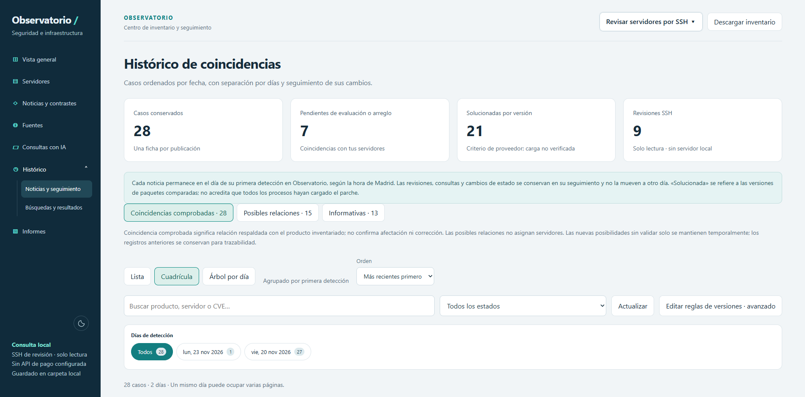
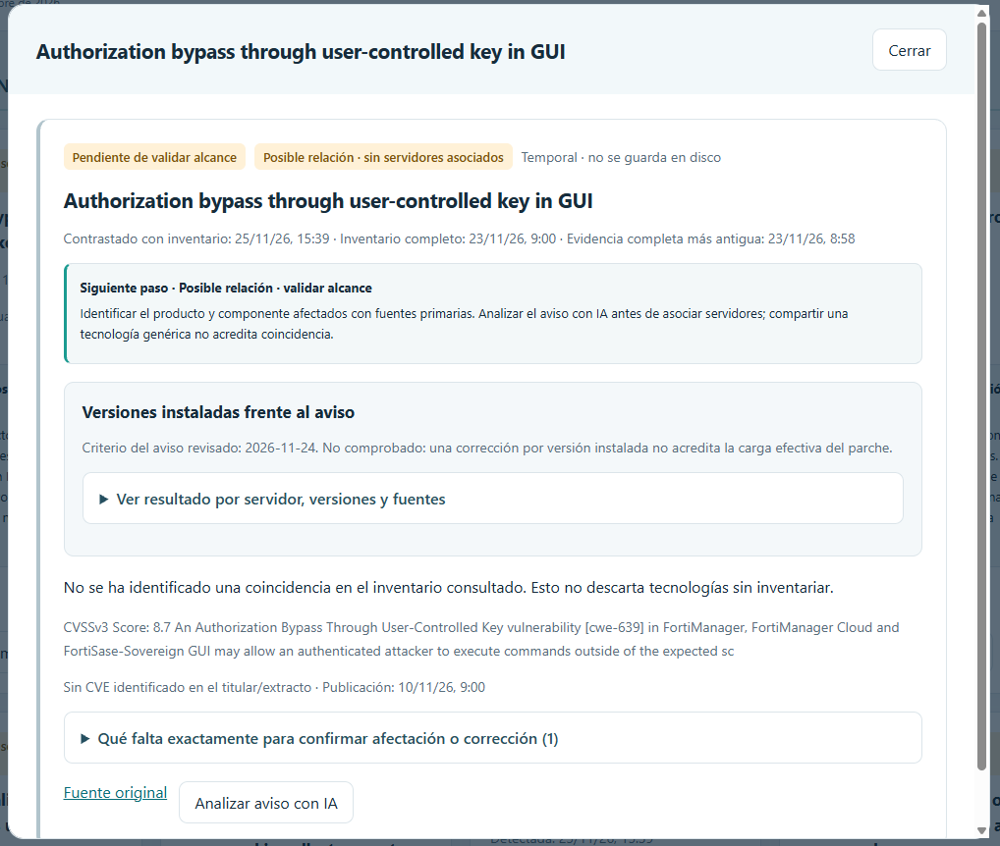
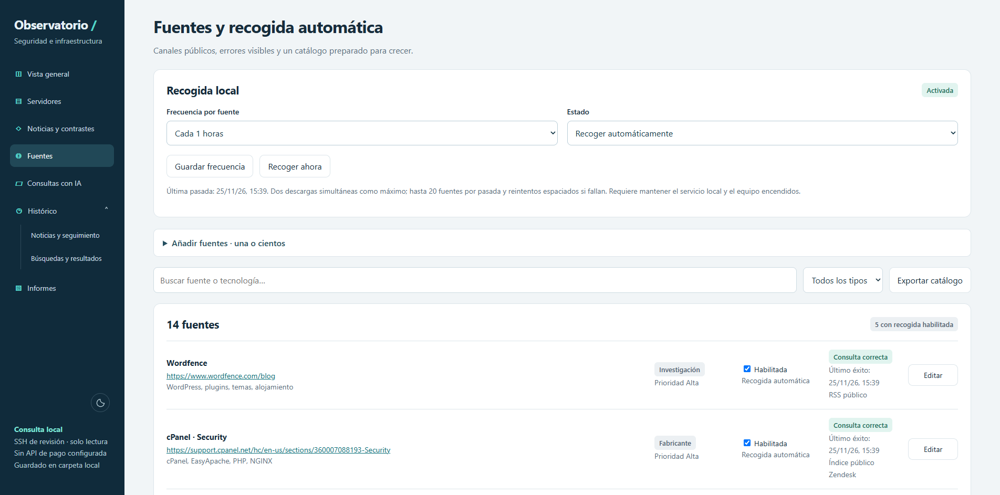

Proyecto personal · Gestión de vulnerabilidades · Noviembre de 2026
Observatorio: avisos de seguridad frente a un inventario
Cada día se publican decenas de avisos de seguridad. La mayoría no afecta a los equipos que gestionas. Observatorio los recoge de fuentes públicas, los contrasta con un inventario de software y separa lo que está respaldado por evidencia de lo que todavía es una sospecha.
Node.js · JavaScript · HTML y CSS · Desarrollado con Codex
Lo desarrollé con ayuda de Codex, el agente de programación de OpenAI. Yo definí qué debía decidir la herramienta, revisé sus criterios y lo probé con un inventario real. El repositorio es privado. Las capturas son de una instalación en uso y solo muestran avisos públicos.
El problema
Leer los boletines de fabricantes y blogs de seguridad no basta. Cada aviso hay que cruzarlo con lo que tienes instalado, con la versión exacta y con el criterio del proveedor. Cuando se hace a mano, es fácil dar un servidor por afectado solo porque usa la misma tecnología que menciona la noticia, o por corregido sin haberlo comprobado.
Quería una herramienta que hiciera ese cruce de forma repetible y que dijera siempre qué falta para confirmar un caso.
Cómo funciona
Fuentes públicas → recogida y deduplicación → contraste ← inventario local
↓
Navegador ⇄ servidor Node.js local ⇄ estado en JSON
↓
consultas opcionales a Codex- Recogida. Consulta hasta 20 fuentes por pasada (fabricantes, blogs de investigación, índices públicos), con dos descargas simultáneas y deduplicación por URL.
- Contraste. Compara cada aviso con el inventario por proveedor, distribución, paquete y versión.
- Seguimiento. Cada caso conserva el día en que se detectó, sus revisiones y el siguiente paso.
- Consultas con IA. Opcionales. Se preparan con referencias, las envía el usuario y la respuesta vuelve a la aplicación con sus fuentes.
Tres resultados, no dos
La decisión de diseño más importante fue no reducirlo todo a «afectado» o «no afectado».
- Coincidencia comprobada: el alcance del aviso y la evidencia del componente concreto respaldan la relación con el inventario.
- Posible relación: falta identificar el producto, el componente o un criterio aplicable. Una mención genérica a una tecnología no asigna servidores.
- Informativa: el artículo es documentación o contexto, sin una vulnerabilidad que se pueda evaluar por versiones.
También separé lo que acredita cada dato. Que la versión instalada incluya la corrección prueba el resultado a nivel de paquete. No prueba que los procesos en marcha hayan cargado el parche, ni la configuración efectiva, ni la exposición. La herramienta lo dice en cada ficha.
Las vistas




Seguridad de la propia herramienta
Un panel que guarda un inventario de servidores es un objetivo interesante, así que lo traté como tal:
- El servidor solo escucha en
127.0.0.1y valida las cabecerasHostyOrigin. - Las escrituras exigen una cabecera propia y la interfaz aplica una política CSP.
- Antes de descargar una fuente se filtran las IP privadas y la IP resuelta queda fijada, lo que evita ataques de DNS rebinding.
- El estado se guarda de forma atómica con control de revisión. El HTML se escapa y las URL se validan antes de mostrarlas.
- La distribución publicada lleva SSH deshabilitado. Las consultas de lectura por SSH solo se conservan para pruebas simuladas.
Pruebas
Tres comprobaciones automáticas cubren la clasificación por proveedor y componente, la retención del histórico, las actualizaciones parciales y la combinación de varios datos por servidor. Usan inventarios ficticios y respuestas SSH simuladas.
Qué mejoraría
Hice una revisión del código y el diseño después de la primera versión. Lo pendiente:
- Unificar el inventario: el motor y la vista de servidores leen hoy de fuentes distintas.
- Adaptar la interfaz a móvil, que a 400 px de ancho se desborda.
- Dividir los archivos más grandes del frontend y añadir pruebas de interfaz, porque ahora solo se prueba el backend.
- Evitar releer el estado completo en cada petición.
Qué me llevo
El valor no está en recoger noticias, sino en ser honesto con lo que demuestra cada dato. Separar «coincide», «podría coincidir» y «está corregido según la versión» cambia la conversación con quien tiene que decidir qué se parchea primero.